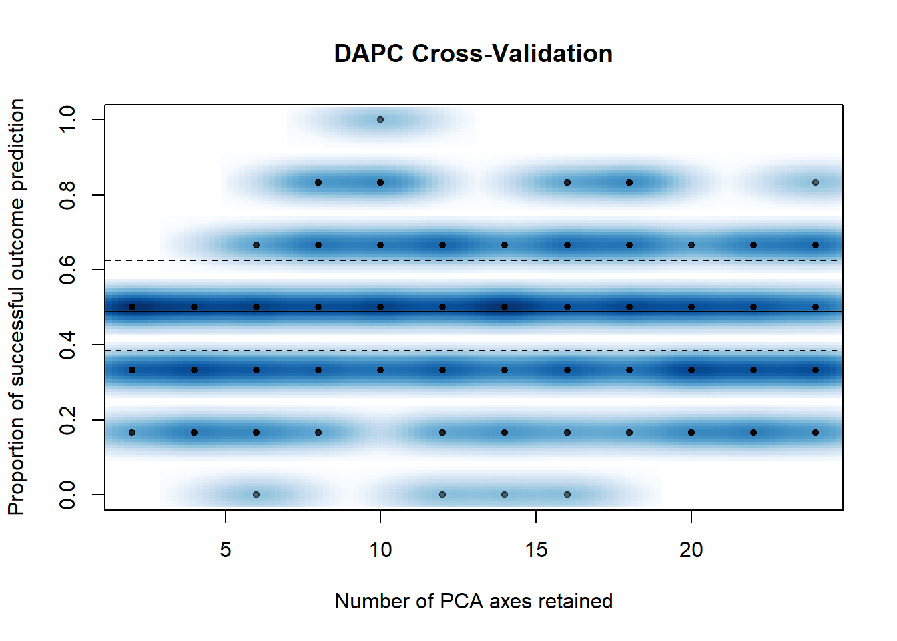
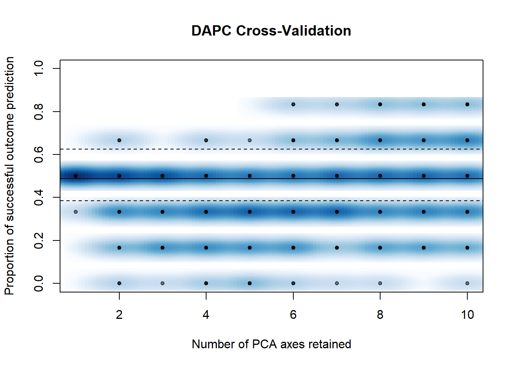
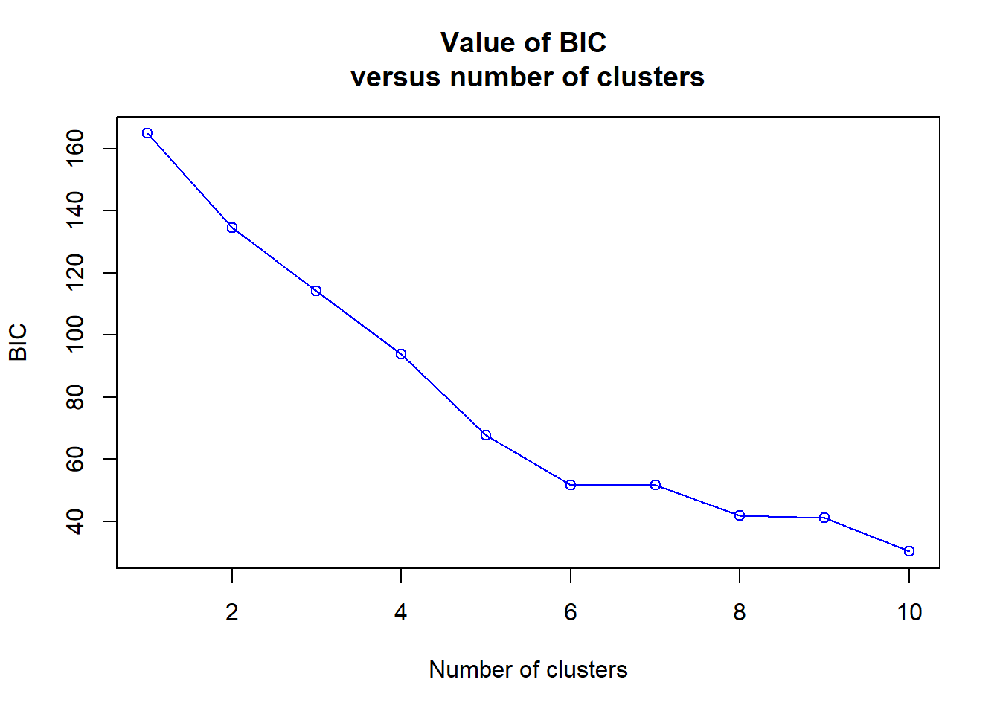
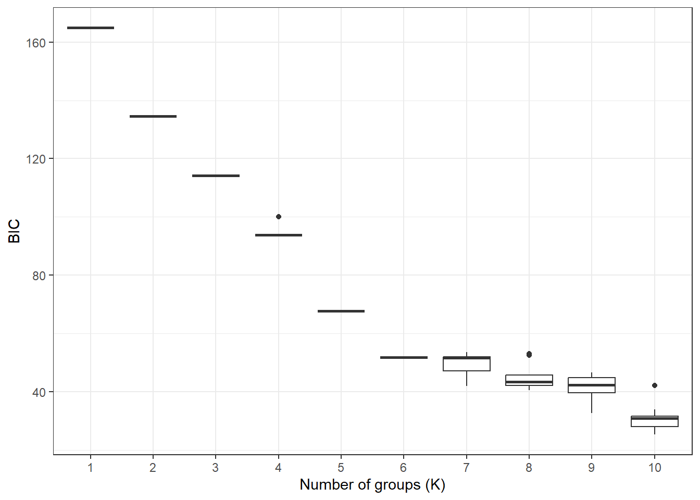
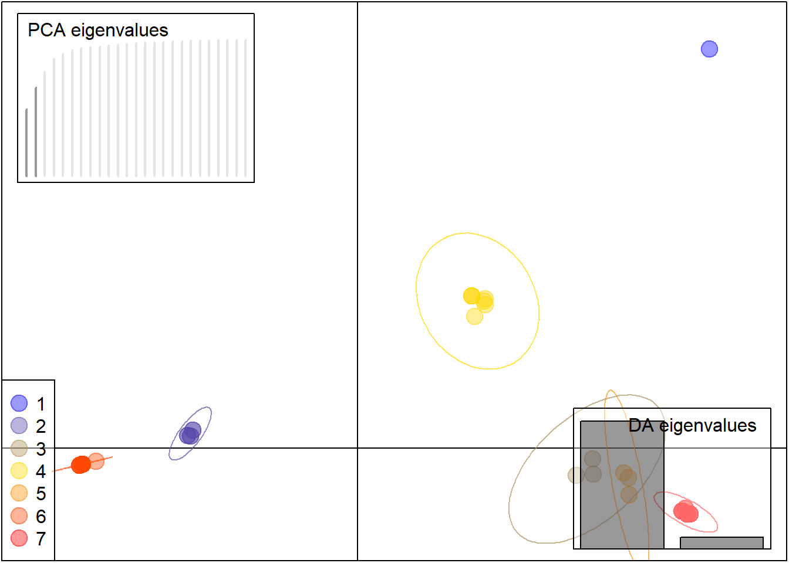
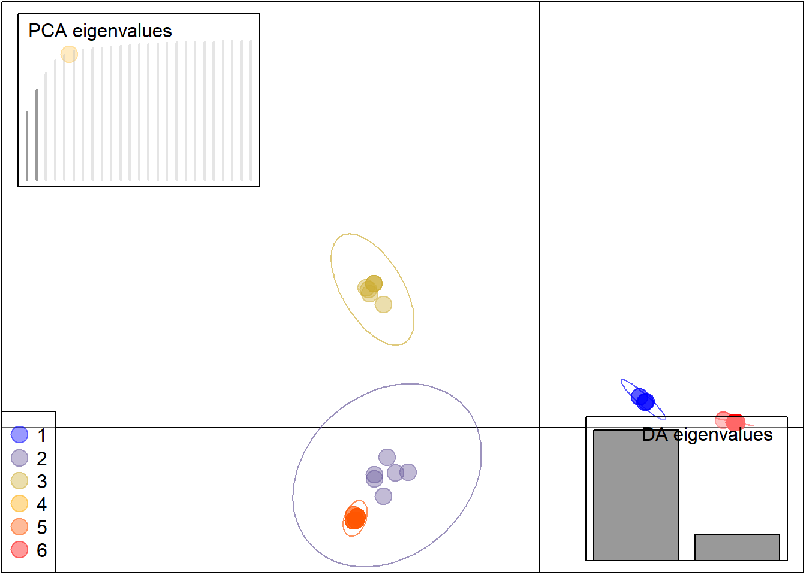
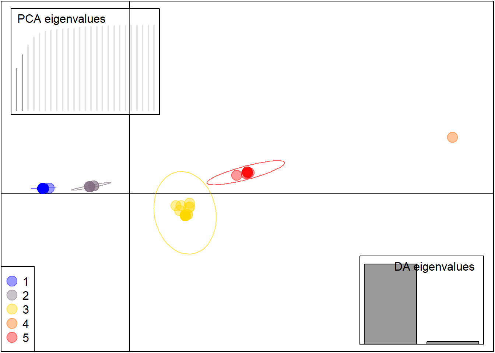
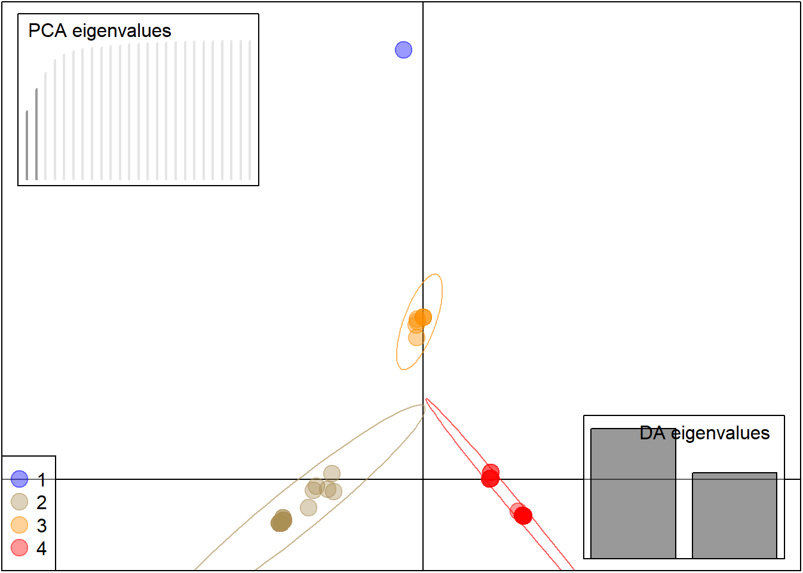

library(adegenet)
library(grDevices)
library(seqinr)The DAPC aims to partition variation into components between and within populations, emphasizing maximization of between-population variation and minimization of within-population variation. As a result, DAPC can also probabilistically assign individuals to populations, similar to Bayesian clustering methods (Milgroom, 2015).
This analysis should be conducted using R Studio software.
Load the required libraries
Load the data
obj <- fasta2genlight("alinhamentocerto.fas")To define the population in my obj object, where I have 27 individuals belonging to group 1 and 32 belonging to group 2, I did:
x <- pop(obj) <- c("grupo1", "grupo1", "grupo1", "grupo1", "grupo1", "grupo1", "grupo1", "grupo1", "grupo1","grupo1", "grupo1", "grupo1", "grupo1", "grupo1", "grupo1", "grupo1", "grupo1", "grupo1","grupo1", "grupo1", "grupo1", "grupo1", "grupo1","grupo1", "grupo1", "grupo1", "grupo1", "grupo2", "grupo2", "grupo2","grupo2", "grupo2", "grupo2","grupo2", "grupo2", "grupo2", "grupo2", "grupo2", "grupo2", "grupo2", "grupo2", "grupo2", "grupo2", "grupo2", "grupo2","grupo2", "grupo2", "grupo2", "grupo2", "grupo2", "grupo2", "grupo2", "grupo2", "grupo2", "grupo2", "grupo2", "grupo2", "grupo2", "grupo2") Specifying the number of PCs to attempt n.pca. Based on the results, we can restrict the number of PCs to 10
set.seed(999)
pramx <- xvalDapc(tab(obj, NA.method = "mean"), pop(obj))
Here I am already restricting it to 10 for n.pca.
set.seed(999)
system.time(pramx <- xvalDapc(tab(obj, NA.method = "mean"), pop(obj),
n.pca = 0:10, n.rep = 100,
parallel = "multicore", ncpus = 4L))
usuário sistema decorrido
4.84 0.52 11.51 The results show that the first PC explains a significant portion of my findings
pramx[-1]$`Median and Confidence Interval for Random Chance`
2.5% 50% 97.5%
0.3854167 0.5049190 0.6244213
$`Mean Successful Assignment by Number of PCs of PCA`
1 2 3 4 5 6 7 8
0.4983333 0.4350000 0.4000000 0.3633333 0.3416667 0.3783333 0.4250000 0.4650000
9 10 11 12 13 14 15
0.4600000 0.4816667 0.4950000 0.4533333 0.4300000 0.4433333 0.4550000
$`Number of PCs Achieving Highest Mean Success`
[1] "1"
$`Root Mean Squared Error by Number of PCs of PCA`
1 2 3 4 5 6 7 8
0.5019407 0.5780715 0.6146363 0.6527719 0.6739189 0.6409628 0.5904330 0.5639641
9 10 11 12 13 14 15
0.5661763 0.5474689 0.5288877 0.5739725 0.5976807 0.5797509 0.5678908
$`Number of PCs Achieving Lowest MSE`
[1] "1"
$DAPC
#################################################
# Discriminant Analysis of Principal Components #
#################################################
class: dapc
$call: dapc.data.frame(x = as.data.frame(x), grp = ..1, n.pca = ..2,
n.da = ..3)
$n.pca: 1 first PCs of PCA used
$n.da: 1 discriminant functions saved
$var (proportion of conserved variance): 0.489
$eig (eigenvalues): 0.001275 vector length content
1 $eig 1 eigenvalues
2 $grp 59 prior group assignment
3 $prior 2 prior group probabilities
4 $assign 59 posterior group assignment
5 $pca.cent 212 centring vector of PCA
6 $pca.norm 212 scaling vector of PCA
7 $pca.eig 25 eigenvalues of PCA
data.frame nrow ncol content
1 $tab 59 1 retained PCs of PCA
2 $means 2 1 group means
3 $loadings 1 1 loadings of variables
4 $ind.coord 59 1 coordinates of individuals (principal components)
5 $grp.coord 2 1 coordinates of groups
6 $posterior 59 2 posterior membership probabilities
7 $pca.loadings 212 1 PCA loadings of original variables
8 $var.contr 212 1 contribution of original variables Now that I have defined my number of PCs, I need to determine the optimal number of clusters. I set choose = TRUE, and when prompted in the console to 'Choose the number of clusters (>=2)', I will enter 10. This will allow me to obtain BIC values for up to 10 groups. Based on the BIC values, I will analyze the best number of clusters. Starting from 7, lower BIC values indicate better model fit
t <- find.clusters(obj, max.n.clust=10, n.pca = 200, choose = TRUE)
Choose the number of clusters (>=2): maxK <- 10
myMat <- matrix(nrow=10, ncol=maxK)
colnames(myMat) <- 1:ncol(myMat)
for(i in 1:nrow(myMat)){
grp <- find.clusters(obj, n.pca = 40, choose.n.clust = FALSE, max.n.clust = maxK)
myMat[i,] <- grp$Kstat
}
library(ggplot2)
library(reshape2)
my_df <- melt(myMat)
colnames(my_df)[1:3] <- c("Group", "K", "BIC")
my_df$K <- as.factor(my_df$K)
head(my_df) Group K BIC
1 1 1 164.9196
2 2 1 164.9196
3 3 1 164.9196
4 4 1 164.9196
5 5 1 164.9196
6 6 1 164.9196p1 <- ggplot(my_df, aes(x = K, y = BIC))
p1 <- p1 + geom_boxplot()
p1 <- p1 + theme_bw()
p1 <- p1 + xlab("Number of groups (K)")
p1
I started assuming it’s 7
t <- find.clusters(obj, max.n.clust=10, n.pca = 200, choose = TRUE, n.clust = 7)head(t$grp, 7) UFV34 UFV486 UFV443 UFV445 UFV446 UFV72 UFV519
3 7 6 4 4 6 4
Levels: 1 2 3 4 5 6 7t$size[1] 1 6 3 7 3 24 15dapc1 <- dapc(obj, t$grp, n.pca = 2, n.da = 2, var.contr = TRUE, scale = FALSE)Here we can observe overlap between groups 2 and 6, indicating they belong to the same cluster. Therefore, I will test for n.clust=6
scatter(dapc1, ratio.pca=0.3, bg="white", legend = TRUE, pch=20, cell=10, cstar=0, solid=.4, cex=3, clab=0,clabel = FALSE, posi.leg = "bottomleft", scree.pca = TRUE,
posi.pca = "topleft", cleg = 1, xax = 1, yax = 2, inset.solid = 0.4
)
Testing n.clust = 6 still classifies two groups as different when they are actually the same. Look at groups 6 and 5. I will try 5 clusters
t2 <- find.clusters(obj, max.n.clust=10, n.pca = 200, choose = TRUE, n.clust = 6)
dapc2 <- dapc(obj, t2$grp, n.pca = 2, n.da = 2, var.contr = TRUE, scale = FALSE)
scatter(dapc2, ratio.pca=0.3, bg="white", legend = TRUE, pch=20, cell=8, cstar=0, solid=.4, cex=3, clab=0,clabel = FALSE, posi.leg = "bottomleft", scree.pca = TRUE,
posi.pca = "topleft", cleg = 1, xax = 1, yax = 2, inset.solid = 0.4
)
Testing n.clust = 5, there is no overlap between groups. It seems that this subdivision is appropriate but I will test with n=4
t3 <- find.clusters(obj, max.n.clust=10, n.pca = 200, choose = TRUE, n.clust =5)
dapc3 <- dapc(obj, t3$grp, n.pca = 2, n.da = 2, var.contr = TRUE, scale = FALSE)
scatter(dapc3, ratio.pca=0.3, bg="white", legend = TRUE, pch=20, cell=10, cstar=0, solid=.4, cex=3, clab=0,clabel = FALSE, posi.leg = "bottomleft", scree.pca = TRUE,
posi.pca = "topleft", cleg = 1, xax = 1, yax = 2, inset.solid = 0.4
)
So I decided to test n.clust = 4, and it was the smallest number of clusters that classified according to
t3 <- find.clusters(obj, n.pca = 200, n.clust =4)
dapc3 <- dapc(obj, t3$grp, n.pca = 2, n.da = 2, var.contr = TRUE, scale = FALSE)
scatter(dapc3, ratio.pca=0.3, bg="white", legend = TRUE, pch=20, cell=7, cstar=0, solid=.4, cex=3, clab=0,clabel = FALSE, posi.leg = "bottomleft", scree.pca = TRUE,
posi.pca = "topleft", cleg = 1, xax = 1, yax = 2, inset.solid = 0.4)
PCA Eigenvalues: These are the eigenvalues associated with the principal components obtained through PCA analysis. They are important for determining how many principal components are needed to explain a significant amount of variance in the original data.
DA Eigenvalues: These are the eigenvalues associated with the linear discriminants obtained through discriminant analysis. They are used to determine which discriminants capture the highest variance between classes.